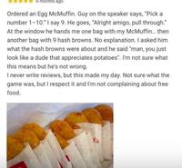
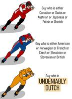

0


A US law firm has accused Lenovo of violating Justice Department strictures about the bulk transfer of data to foreign adversaries, namely China. From a report: The case filed by Almeida Law Group on behalf of San Francisco-based "Spencer Christy, individually and on behalf of all others similarly situated" centers on the Data Security Program regulations implemented by the DOJ last year. According to the suit, these were "implemented to prevent adversarial countries from acquiring large quantities of behavioral data which could be used to surveil, analyze, or exploit American citizens' behavior."
The complaint states the DOJ rule "makes clear that sending American consumers' information to Chinese entities through automated advertising systems and associated databases with the requisite controls is prohibited." The case states the threshold for "covered personal identifiers" is 100,000 US persons or more and lists a range of potential identifiers, from government and financial account numbers to IMEIs, MAC, and SIM numbers, demographic data, and advertising IDs.
Read more of this story at Slashdot.
Microsoft AI CEO Mustafa Suleyman expects "human-level performance on most, if not all professional tasks" from AI, and believes most work involving "sitting down at a computer" -- accounting, legal, marketing, project management -- will be fully automated within the next year or 18 months. He pointed to exponential growth in computational power and predicted that creating a new AI model will soon be as easy as "creating a podcast or writing a blog."
Read more of this story at Slashdot.
Mark Fischbach, the YouTube creator known as Markiplier who has spent nearly 15 years building an audience of more than 38 million subscribers by playing indie-horror video games on camera, has pulled off something that most independent filmmakers never manage -- a self-financed, self-distributed debut feature that has grossed more than $30 million domestically against a $3 million budget.
Iron Lung, a 127-minute sci-fi adaptation of a video game Fischbach wrote, directed, starred in, and edited himself, opened to $18.3 million in its first weekend and has since doubled that figure worldwide in just two weeks, nearly matching the $19.1 million debut of Send Help, a $40 million thriller from Disney-owned 20th Century Studios. Fischbach declined deals from traditional distributors and instead spent months booking theaters privately, encouraging fans to reserve tickets online; when prospective viewers found the film wasn't screening in their city, they called local cinemas to request it, eventually landing Iron Lung on more than 3,000 screens across North America -- all without a single paid media campaign.
Read more of this story at Slashdot.
Micron has begun mass production of the 9650 series, the industry's first PCIe 6.0 SSD, capable of sequential read speeds up to 28 GB/s and random read performance of 5.5 million IOPS -- roughly double the throughput of the fastest PCIe 5.0 drives available today.
The drive targets AI and data center workloads and ships in E1.S and E3.S form factors across two variants: the Pro, available in capacities up to 30.72 TB, and the endurance-oriented Max, topping out at 25.6 TB. Both variants share the same peak sequential and random speeds but diverge on mixed workloads and endurance ratings -- the Max 25.6 TB carries a random endurance rating of 140,160 TBW compared to 56,064 TBW on the Pro 30.72 TB.
Power draw holds at 25 watts, unchanged from high-end PCIe 5.0 enterprise SSDs, though the 9650 is Micron's first drive to support liquid cooling alongside air. Consumer platforms are not expected to adopt PCIe 6.0 until 2030.
Read more of this story at Slashdot.
China's courts are now handling more than 550,000 intellectual-property cases a year -- making it the world's most litigious country for IP disputes -- as the nation's own companies, once notorious for copying foreign designs and technology, find themselves on the defensive against a domestic counterfeiting epidemic fueled by excess factory capacity.
The problem runs from knockoff "Lafufu" plush toys (cheap copies of Pop Mart's wildly popular Labubu dolls, which prompted a nationwide crackdown and a Shanghai police bust of a $1.7 million stash in July) to copied motorcycles and solar panels. Judges in Shanghai, the preferred venue for IP litigation, are working through cases at a rate of roughly one per day, and it still takes three months for a case to land on a court's docket.
Chinese companies are also increasingly clashing abroad: patent-related cases involving Chinese businesses in America surged 56% in 2023, according to data from GEN, a Chinese law firm. Luckin Coffee and Trina Solar have both filed suits against foreign-based copycats.
Read more of this story at Slashdot.
The software industry's decades-old habit of charging companies a flat fee for every employee who uses a product is running into a fundamental problem: AI agents don't sit in chairs, and they don't need licences.
As autonomous agents take on tasks that human workers once handled, the per-seat pricing model that made SaaS revenue so predictable is giving way to consumption-based and hybrid alternatives. Snowflake and Databricks (valued at $134 billion) already charge based on usage. Salesforce initially priced its Agentforce customer relations bot at $2 per conversation but faced customer pushback and now offers action-based pricing, upfront credits and fixed fees.
ServiceNow's finance chief Amit Zavery said last month that some customers aren't ready for purely consumption-based models. Goldman Sachs estimates US software spending will nearly triple to $2.8 trillion by 2037 as automated tasks blur the boundary between IT and wage budgets, but that money will no longer arrive in the neat recurring instalments that investors and private equity firms have come to expect.
Read more of this story at Slashdot.
Sony Group has developed a technology that can identify the underlying music used in tunes generated by AI, making it possible for songwriters to seek compensation from AI developers if their music was used. From a report: Sony Group's technology analyzes which musicians' songs were used in learning and generating music. It can quantify the contribution of each original work, such as "30% of the music used by the Beatles and 10% by Queen," for example.
If the AI developer agrees to cooperate for the analysis, Sony Group will obtain data by connecting to the developer's base model system. When cooperation is not attainable, the technology estimates the original work by comparing AI-generated music with existing music. The AI boom has sparked numerous cases in which AI developers are accused of using copyrighted music, video and writing without permission to train machines. In the music industry, AI-generated songs using the voices of well-known singers have been distributed online. The Japanese company thinks the technology will help create a system that distributes revenue generated by AI music to original songwriters based on their contribution.
Read more of this story at Slashdot.
Sales of refurbished PCs are on the up amid shortages of key components, including memory chips, that are making brand new devices more expensive. From a report: Stats compiled by market watcher Context show sales of refurbished PCs via distribution climbed 7 percent in calendar Q4 across five of the biggest European markets -- Italy, the UK, Germany, Spain, and France.
Affordability is the primary driver in the secondhand segment, the analyst says, with around 40 percent of sales driven by budget-conscious users shopping in the $235 to $355 price band for laptops. The $355 to $475 tier is also expanding -- representing 23 percent of the refurbished market, up from 15 percent a year earlier -- indicating some buyers are prepared to spend a bit more for improved specifications.
Read more of this story at Slashdot.
Residents of Potters Bar, a small town just north of London, are trying to block what would be one of Europe's largest data centers from being built on 85 acres of rolling farmland that separates their community from the neighboring village of South Mimms. Multinational operator Equinix acquired the land last October after the local council granted planning permission in January 2025, and the company intends to break ground this year on a development it estimates will cost more than $5 billion.
The UK government's decision to classify data centers as "critical national infrastructure" and a new "gray belt" land designation that loosens building restrictions on underperforming greenbelt parcels helped clear the path for approval -- even though objections from locals outweighed signatures of support by nearly two-to-one during the public consultation. A protest group of more than 1,000 residents has since appealed to a third-party ombudsman and the UK's Office of Environmental Protection, but has so far failed to overturn the decision.
Read more of this story at Slashdot.
Britain has lost more than 14,000 pubs since 2009, a decline from roughly 54,000 registered public houses and bars to under 40,000 by 2022, according to a new analysis of UK business register data by data analyst Lauren Leek. The North East, North West, Yorkshire and the Midlands lost 25 to 30% of their stock; London saw the smallest decline.
Leek trained a random forest model on 49,840 pubs and found spatial isolation -- how far a pub stood from its nearest neighbour -- was the single strongest predictor of closure. Median nearest-neighbour distance for surviving pubs is roughly 280 metres; for closed pubs, 640 metres. Each closure pushes remaining pubs further into isolation, a dynamic Leek calls a "spatial death spiral."
Much of that isolation traces to ownership. Stonegate, Britain's largest pub company and a holding of PE firm TDR Capital, carries over $4 billion in debt from its 2019 leveraged acquisition of Ei Group. PE-backed and overseas-owned companies now control roughly a quarter to a third of all British pubs.
Read more of this story at Slashdot.
0
An anonymous reader shares a report: A moderator on diyAudio set up an experiment to determine whether listeners could differentiate between audio run through pro audio copper wire, a banana, and wet mud. Spoiler alert: the results indicated that users were unable to accurately distinguish between these different 'interfaces.'
Pano, the moderator who built the experiment, invited other members on the forum to listen to various sound clips with four different versions: one taken from the original CD file, with the three others recorded through 180cm of pro audio copper wire, via 20cm of wet mud, through 120cm of old microphone cable soldered to US pennies, and via a 13cm banana, and 120cm of the same setup as earlier.
Initial test results showed that it's extremely difficult for listeners to correctly pick out which audio track used which wiring setup. "The amazing thing is how much alike these files sound. The mud should sound perfectly awful, but it doesn't," Pano said. "All of the re-recordings should be obvious, but they aren't."
Read more of this story at Slashdot.
Mazda, the automaker that for years defended its scroll-wheel infotainment system as a safer alternative to touchscreens, is abandoning the approach entirely in the 2026 CX-5 in favor of a 15.6-inch touchscreen and zero physical buttons.
The current lineup -- the CX-50 Hybrid, CX-70 and CX-90 -- still relies on a console-mounted scroll wheel and dedicated action buttons to navigate a tablet-like screen perched atop the dashboard. Upper-trim CX-70 and CX-90 models do have 12.3-inch touchscreens, but touch input only works when parked and only inside CarPlay; it disables automatically once the car is in drive.
The new CX-5 goes the other direction entirely, eliminating all hard buttons including the volume knob and physical climate controls that current models still offer. Mazda says the touchscreen is safe because core functions like climate are pinned to a persistent bottom bar -- an approach Ford, Rivian, and most of the industry adopted years ago.
Read more of this story at Slashdot.
Valve has updated the Steam Deck website to say that the Steam Deck OLED may be out of stock "intermittently in some regions due to memory and storage shortages." From a report: The PC gaming handheld has been out of stock in the US and other parts of the world for a few days, and thanks to this update, we now know why. The update comes shortly after Valve delayed the Steam Machine, Steam Frame, and Steam Controller from a planned shipping window of early 2026 because of the memory and storage crunch.
"We have work to do to land on concrete pricing and launch dates that we can confidently announce, being mindful of how quickly the circumstances around both of those things can change," Valve said in a post about that announcement from earlier this month. Its goal is to launch that new hardware sometime in the first half of 2026, and the company is working to finalize its plans "as soon as possible."
Read more of this story at Slashdot.
Up to a third of people worldwide have shoulder pain; it's one of the most common musculoskeletal complaints. But medical imaging might not reveal the problem -- in fact, it could even cloud it. From a report: In a study published in JAMA Internal Medicine this week, 99 percent of adults over 40 were found to have at least one abnormality in a rotator cuff on magnetic resonance imaging (MRI). The rotator cuff is the group of muscles and tendons in a shoulder joint that keeps the upper arm bone securely in the shoulder socket -- and is often blamed for pain and other symptoms.
The trouble is, the vast majority of the people in the study had no problems with their shoulders. The finding calls into question the growing use of MRIs to try to diagnose shoulder pain -- and, in turn, the growing problem of overtreatment of rotator cuff (RC) abnormalities, which includes partial- and full-thickness tears as well as signs of tendinopathy (tendon swelling and thickening). "While we cannot dismiss the possibility that some RC tears may contribute to shoulder symptoms, our findings indicate that we are currently unable to distinguish clinically meaningful MRI abnormalities from incidental findings," the study authors concluded.
Read more of this story at Slashdot.
An anonymous reader shares a report: The European Parliament has disabled AI features on the work devices of lawmakers and their staff over cybersecurity and data protection concerns, according to an internal email seen by POLITICO. The chamber emailed its members on Monday to say it had disabled "built-in artificial intelligence features" on corporate tablets after its IT department assessed it couldn't guarantee the security of the tools' data.
"Some of these features use cloud services to carry out tasks that could be handled locally, sending data off the device," the Parliament's e-MEP tech support desk said in the email. "As these features continue to evolve and become available on more devices, the full extent of data shared with service providers is still being assessed. Until this is fully clarified, it is considered safer to keep such features disabled."
Read more of this story at Slashdot.
Krisztian Sandor / CoinDesk : Stripe's stablecoin firm Bridge wins conditional approval from the US OCC to form a national trust bank, which would allow it to issue and manage stablecoins — What to know: … Bridge, a stablecoin infrastructure firm owned by Stripe, said Tuesday it has received conditional approval …
Financial Times : Meta commits to a multiyear deal to buy Nvidia chips, including Vera Rubin; source: Meta's in-house chip strategy had suffered technical challenges and delays — Social media group will purchase millions of chips even as it tries to develop its own AI hardware
Natasha Mascarenhas / Bloomberg : Source: Benchmark's 2020 fund is now worth 10x+ and 2024 fund is 3x what investors put in, based on cash distributions and the paper value of its investments — Venture capitalist and entrepreneur Jack Altman has been hired by Benchmark as a general partner, just two years after he became …
The Information : Benchmark hires Jack Altman, the founder of Alt Capital and Lattice, as its fifth general partner; three Alt Capital team members will join him at Benchmark — Benchmark on Tuesday said it had hired Jack Altman, the founder of early-stage firm Alt Capital and HR software company Lattice, as its fifth general partner.
Abner Li / 9to5Google : Google schedules I/O 2026 for May 19 to 20 in Mountain View, teasing the “latest AI breakthroughs and updates” in Gemini, Android, and more — Following the puzzle this morning, Google has announced that I/O 2026 is taking place May 19-20. — I/O 2026 will feature …
Reshmi Basu / Bloomberg : Some private software companies including McAfee released earnings early to reassure investors worried about an AI-linked selloff, dubbed the “SaaSpocalypse” — A handful of software firms including McAfee have released their earnings ahead of schedule in a bid to convince lenders …
Lucas Shaw / Bloomberg : Night Media, a talent agency that represents influencers like Twitch streamer Kai Cenat, raised $70M led by StepStone to expand into gaming, sports, and music — Night Media Inc., the talent management firm that represents social media celebrities such as popular Twitch streamer Kai Cenat …
Megan Morrone / Axios : Over 100 researchers from Johns Hopkins, Oxford, and more call for guardrails on some infectious disease datasets that could enable AI to design deadly viruses — - The White House's Genesis Mission — announced in late 2025 — aims to build AI systems trained on massive scientific datasets to speed research breakthroughs.
Mark Gurman / Bloomberg : Sources: Apple ramps up work on AI wearables with cameras and Siri, including smart glasses, AirPods, and a pendant that can be worn as a necklace or pinned — Apple Inc. is accelerating development of three new wearable devices as part of a shift toward artificial intelligence-powered hardware …
Anthropic : Anthropic launches Claude Sonnet 4.6 with improvements in coding, consistency, and more, for Free and Pro users; it features a 1M token context window in beta — Claude Sonnet 4.6 is our most capable Sonnet model yet. It's a full upgrade of the model's skills across coding, computer use …
Anna Heim / TechCrunch : Mistral buys Paris-based Koyeb, which simplifies AI app deployment at scale and manages AI infrastructure, in its first acquisition; Koyeb raised $8.6M to date — Mistral AI, the French company last valued at $13.8 billion, has made its first acquisition. The OpenAI competitor has agreed …
Edward Ludlow / Bloomberg : Mesh, founded by ex-SpaceX staff to mass produce optical transceivers that convert optical signals to electrical signals, raised a $50M Series A led by Thrive — Mesh Optical Technologies, a startup working on hardware used to move data at high speeds within data centers …
Nathan Bomey / Axios : CFTC Chair Mike Selig says the commission will file friend-of-the-court briefs to defend its exclusive jurisdiction over prediction markets amid state lawsuits — The Commodity Futures Trading Commission is launching a legal campaign to defend its regulatory turf on prediction markets …
Sarah Perez / TechCrunch : Automattic adds an AI assistant to WordPress.com, enabling users to perform site-wide layout and style modifications via natural language commands — WordPress.com, the website hosting platform from Automattic, will now include a built-in WordPress AI assistant, the company announced on Tuesday.
Anthony Hughes / Bloomberg : SEC filing: Liftoff withdraws its IPO filing without specifying a reason, less than two weeks after the mobile ad platform postponed plans to price its IPO — Liftoff Mobile Inc. withdrew its IPO filing, less than two weeks after the mobile advertising platform operator said it was postponing plans to raise as much as $762 million.